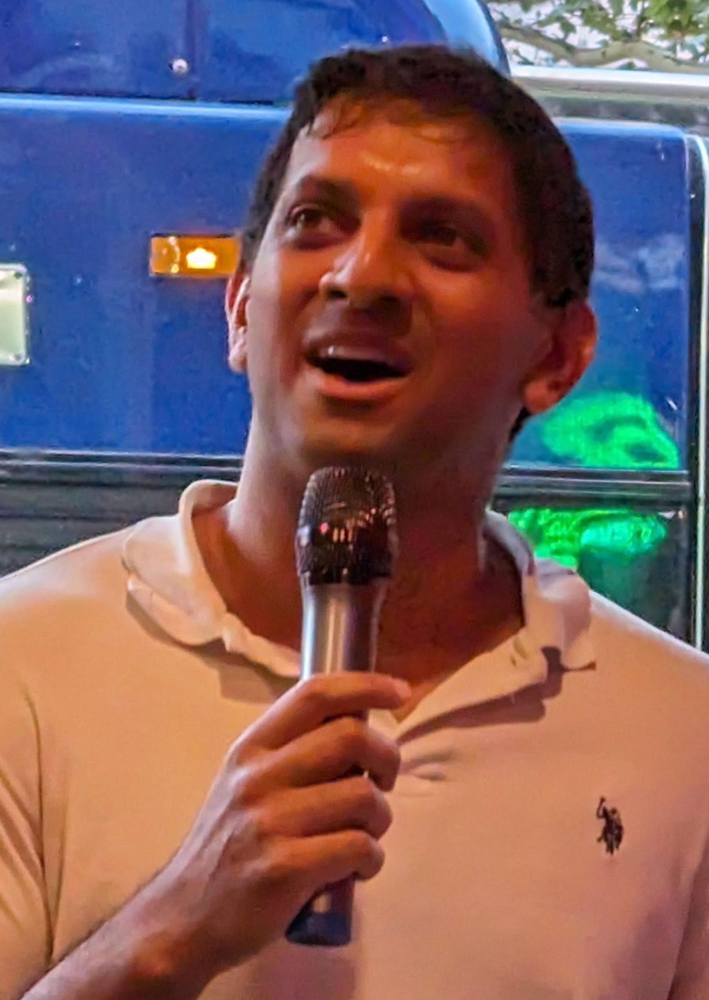
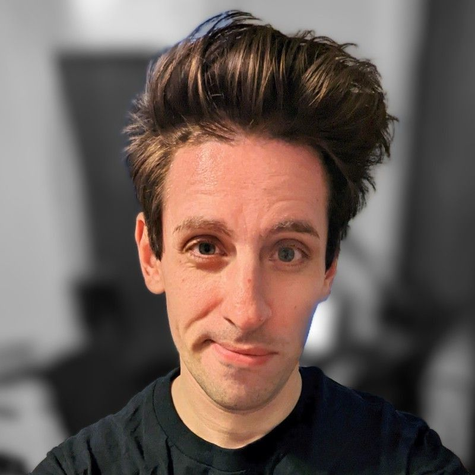
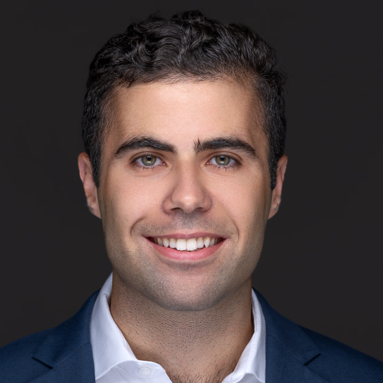

About Us
Kunal Mahajan
UNIQUE Founder and Director
Kunal Mahajan is the Founder and Director of UNIQUE which held its debut performance in New York City at Magnet Theater in February 2023. He is passionate about the disability cause through his own experience of identifying as a person who stutters. He has spent 13 years in the banking industry working as a Leveraged Finance and Financial Sponsor Coverage banker before transitioning into the Social Impact space where he helped build out SMBC’s Sustainability and Corporate Social Responsibility efforts after finding a new sense of purpose after founding the disabilities, neurodiversity, and mental health Employee Resource Group at SMBC back in 2019. Kunal serves on the Board of Directors for Camp Words Unspoken, New England’s first overnight camp for youths and teens who stutter, as a Foundations Mentor for Lime Connect, a global non-profit that connects high-achieving students and professionals with disabilities, and has worked closely with several other disability non-profits including The National Stuttering Association, ReelAbilities, HLAA, Little People of America, VISIONS, NAMI, etc. Kunal is trained in both regular and musical improv and believes in utilizing the improv art form to help underrepresented individuals build their confidence and find their voice and as a way to drive organizational cultural change.
Richard Krysztoforski
UNIQUE Coach and Head of Learning & Development
Richard Krysztoforski (he/him) brings with him a 13 year long career in learning and development in both the private and nonprofit sectors. Currently, he is the Director of Learning and Development for Partners for Justice, a nonprofit that provides collaborative support services to people facing criminal charges, while helping public defenders protect people from incarceration and other criminal penalties. In his work Richard refers to the techniques of applied empathy, applied improvisation, human centered design, and mindfulness to create a safe and conducive environment for learning. Richard is a long-time improv comedy performer, artist community organizer, and the co-founder of a podcast network aimed at supporting independent artists.
Tamar Gressel
Head of Marketing & New York Operations

Tamar Gressel (she/her) is a special education teacher currently working for the New York City Department of Education. Tamar is a neurodivergent person with extensive knowledge of autism spectrum disorders and other disabilities. She credits improv for helping her feel more confident when talking to others and reducing her social anxiety. Tamar believes in using improv as a tool to foster engagement, teach valuable social skills, and promote flexible thinking. In her work as a teacher she uses skills learned through improv to constantly adapt to the needs of her students.
Alex Picone
Treasurer & Head of Pennsylvania Operations
Alex Picone(he/him) currently resides and is originally from King of Prussia, PA. Alex has been a part of UNIQUE for the past year. He has performed with UNIQUE at Magnet Theatre and Gotham Comedy Club in NYC. Alex works in the financial services industry and identifies as a person who stutters. He has prior experience working with non-profits and is passionate about empowering other people who stutter. Alex has previously worked with Best Buddies International, MySpeech, TheWorldStuttering Network, and CampWordsUnspoken. Alex enjoys exercising and hanging out with his friends and family in his free time